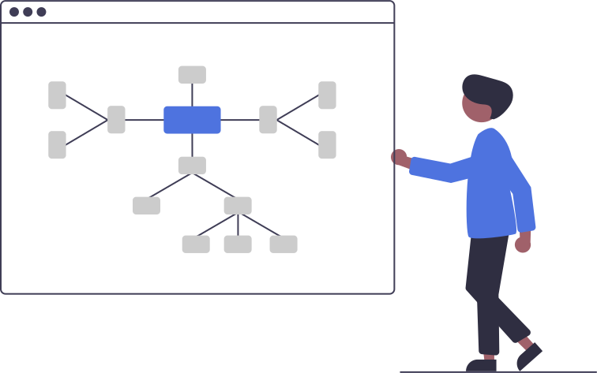
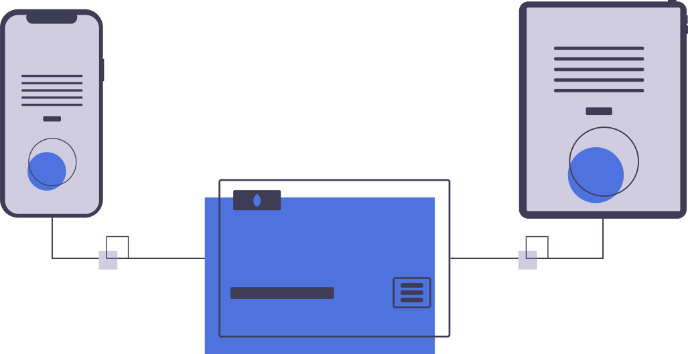

Welcome!
This PCAP Analyzer is the culmination of our twelve-week summer internship with Google. Our project focused on creating
a tool to help everyday computer users understand the basic fundamentals of how data is shared across the Internet.
Getting Started
|  | While most people use the internet in some kind of way, not everyone understands the basic fundamentals of how information can be transferred from one machine to another. The goal of this web-app is to provide casual users a simple and intuitive way of visualizing network communciations to explain how computers communicate through networks and packets. We hope you can use our site to understand the structure of the internet! Our project analyzes packets stored in PCAP (packet capture) files. Analyzing PCAP files, reveals a lot about your internet footprint. You can learn more about internet fundamentals below or view PCAP visualizations by clicking on the Start button in the top right-hand corner of this page. |
How does the Internet Work?
| When you load something on the internet, your content is split into tiny fragments called packets. These packets are sent over WiFi and network cabling via different types of protocols. Different types ofprotocols determine how each packet is transported and interpreted by the receiving device. Once all of the packets are routed from one device to another, the packets are rebuilt into the content originally requested. |  |
Some Common Protocols:
- TCP: Core internet protocol with build in retransmission of lost packets
- UDP: A faster core protocol then TCP without the lost packet ditection
- DNS: The phonebook of the Internet, it converts IP address into domain names (TCP/UDP)
- HTTP/S: protocol used to transmit Webpages (TCP/UDP)
- IMAP/POP: protocol used to transmit Email (TCP)
TCP
Core internet protocol with built-in retransmission of lost packets
UDP
A faster core protocol than TCP without lost packet detection
DNS
The phonebook of the internet, converting IP addresses into domain names
HTTP/S
Protocol used to transmit webpages